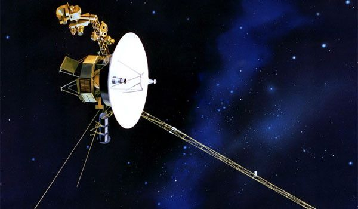
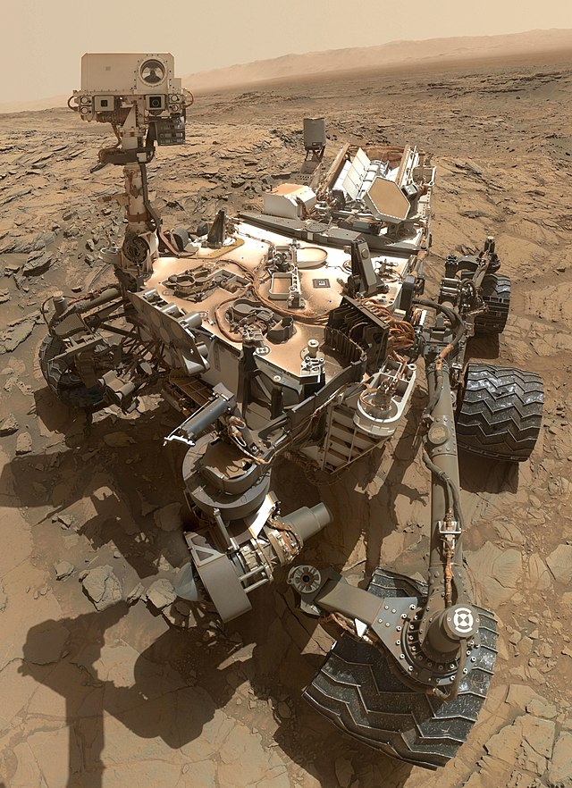
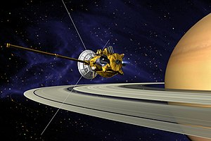

Exploring the Solar System
Space missions have greatly expanded our knowledge of the solar system. Below are some of the most significant missions.
Voyager 1 and 2
Launched in 1977, the Voyager spacecraft have explored Jupiter, Saturn, Uranus, and Neptune, and are now in interstellar space.
Voyager spacecraft exploring the outer solar system
Curiosity Rover
The Curiosity rover landed on Mars in 2012 and has been exploring the Martian surface to assess its past and present ability to support microbial life.
Curiosity rover conducting experiments on Mars
Cassini-Huygens
A collaboration between NASA, ESA, and ASI, Cassini-Huygens studied Saturn and its moons from 2004 to 2017, providing unprecedented insights.
Cassini spacecraft capturing images of Saturn's rings
New Horizons
Launched in 2006, New Horizons conducted a flyby study of Pluto and continues to explore objects in the Kuiper Belt.

New Horizons providing the first close-up images of Pluto
Did You Know?
Voyager 1 is the farthest human-made object from Earth, currently over 14 billion miles away.